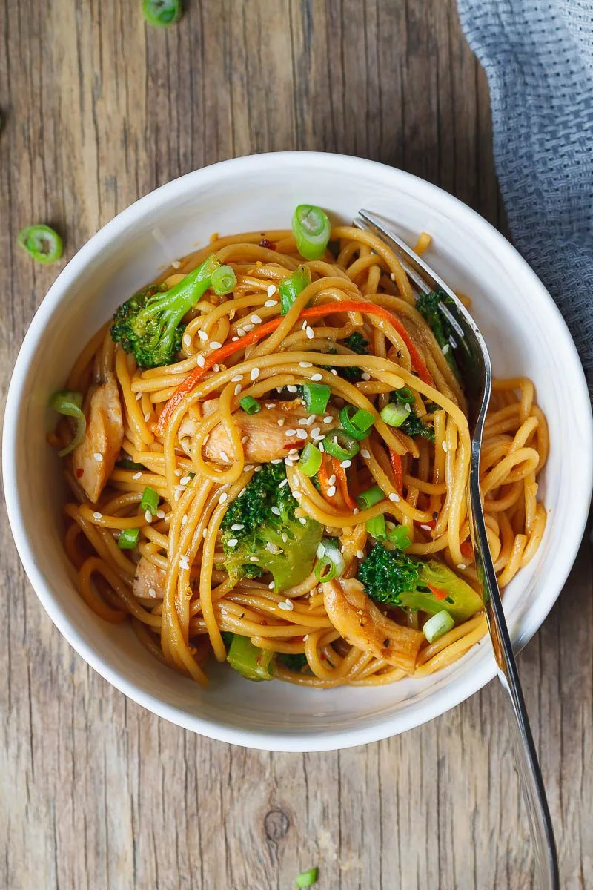

15-Minute Chicken Stir Fry Noodles
Ingredients:
- 1 lb (450g)
skinless, boneless chicken breast, cut into strips
- 1 tablespoon olive
oil 3 garlic cloves, finely minced 1 medium carrot, julienned or
shredded
- 8 ounces (225g) spaghetti noodles 3 cups broccoli florets,
rinsed
- Fresh chopped scallion, for garnish Toasted sesame seeds
- For the sauce 1/2 teaspoon freshly grated ginger or ground
ginger 1 tablespoon brown sugar (or honey) 1/4 cup (60ml)
- low-sodium soy
sauce 2 tablespoons hoisin sauce 2 teaspoons sesame oil 1/4 teaspoon
crushed red pepper flakes, optional Fresh cracked black pepper
Instructions:
- 1. To make the chicken stir fry noodles recipe: In a large pot
with boiling salted water, cook the spaghetti according to package
directions. Add the broccoli florets the last 5 minutes of cooking and let
them cook with pasta until tender. Drain the noodles and broccoli and set
aside.
- 2. While pasta is cooking, whisk together the brown sugar, soy
sauce, hoisin sauce, sesame oil, ginger, red pepper, and black pepper in a
small bowl.
- 3. Season chicken strips to taste with salt and pepper. Add
olive oil to a medium-sized skillet and cook chicken in an even layer over
medium heat, turning from time to time for 2 or 3 minutes, until slightly
golden. Stir in the garlic, and carrots and cook for a minute more, until
cooked through but not overdone.
- 4. Transfer the cooked spaghetti and
broccoli to the skillet and pour the sauce on top and toss until fully
incorporated. Reheat for a couple of minutes and serve the chicken stir
fry noodles, garnished with scallion and toasted sesame seeds. Enjoy!